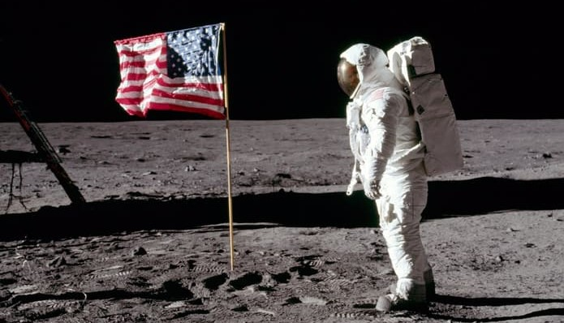

Conspiracy Theories Sinister Truths or Facile Falsities?
‘Conspiracy theories’ are likely to have existed for as long as humans have been ignorant. That is to say, since the dawn of human civilisation. They take the form of ideas which pin the blame of certain events on powerful, and often malicious, actors. Whilst these ideas have likely always been present, it is only in the modern day that they have exploded in popularity. With the rise of social media and it’s tendency to lock people in an echo chamber of their own views and ideas, it has become easier to spread and maintain spurious information. So what are some of these ‘theories’?
Examples of Theories
Some of the most popular ‘theories’ include: ‘chemtrails’, 9/11, the moon landing being a hoax, and more recently: 5G, and anti-vaxxer rhetoric (specifically around the Covid-19 vaccines). For the sake of brevity I will cover only 3, those being the moon landing, 5G, and anti-vaxxer claims.
The Moon Landing Hoax?
This ‘theory’ makes the claim that the Apollo program never landed astronauts on the moon, instead each landing was filmed on a set. The supposed aim of all this fakery was to bankrupt the Soviet Union by engaging them in a fake space race, costing them billions. One example of supposedly strong evidence in favour of this hoax is the fact that there are no stars in the background of most photos.

This photo not only highlights the previously mentioned phenomena but also presents another, the waving flag. Since the moon doesn’t have any substantial atmosphere (surface pressure of 0.3 nPa) there should be no wind to wave the flag, so how come it appears to be waving in this photograph?
These surface level claims appear to hold water, that is until you use the thing nested in between your ears. Firstly, the reason why no stars are visible in this photograph is simply a matter of exposure. This can be verified easily, any photograph taken at night of a streetlight using a smartphone will give you the same result - no stars in the background. This is due to the relative brightness of the stars in relation to the much brighter streetlight, the camera has adjusted for the streetlight brightness and is therefore unable to see anything significantly dimmer than it.
The second claim, that of the waving flag, is equally trivial. The flag is suspended by an (upside down) L shaped pole, while it was screwed into the ground the bottom corner furthest from the pole swung like a pendulum giving the illusion that the flag had somehow caught the ‘wind’ on the lunar surface.
The most damning argument against these ridiculous claims however is a pretty simple one. If America had faked the landing, in the midst of the Cold War, why did the Soviet Union congratulate them instead of calling bull? The Soviet Union had every reason to provide evidence that these landings were faked due to it being of huge propagandistic value. In fact, at the time of the Apollo 11 landing, the Soviet Union had a probe, Luna 15, in orbit. This probe was fitted with a camera and completed 52 orbits of the moon, some of which overlapped with the Apollo mission. It even crashed ~300 miles from the landing site while Armstrong and Aldrin were on the surface.
The 5G Conspiracy
5G is the latest and greatest generation of mobile technology. It promises to offer even greater speeds than it’s predecessor, 4G, potentially enabling widespread adoption of IOT (internet of things) in all sectors. Whilst this sounds great to most, it has also been subject to its fair share of misinformation.
Most of the ‘theories’ surrounding 5G pertain to it damaging health. Whether that be causing Covid-19, some form of cancer or even autism. Often the authors of these claims cite that 5G is of much higher energy than 4G leading to this conclusion. Whilst 5G does in fact use higher energy EM radiation than 4G, this does not mean it is dangerous, as will be demonstrated.
The way 5G achieves these coveted higher speeds is due to it using higher frequency electromagnetic (EM) waves. This frequency change is the key spark behind the anti-5G conspiracy theories. Claims are made that this higher frequency EM radiation can harm the human body leading to the claims made above. Yet again, a surface level understanding of the topic would prevent most from believing this.
Electromagnetic radiation can be found everywhere, from the Sun, to radio waves, to X-ray machines, it is all the same fundamental thing. The key difference however lies in the frequency. Lower frequency EM waves are what’s called ‘non-ionising’, this means that they don’t carry enough energy to cause cell/DNA damage, these include radio waves all the way up to visible light. Higher frequency EM waves are ‘ionising’ and they can damage your DNA, the lowest energy ionising EM radiation would be UV-rays (hence why you need to use suncream). Since the lowest energy EM radiation that can cause damage are UV-rays, any EM radiation below the frequency of UV is non-ionising.
UV-rays have a minimum frequency of 8E^14 Hz whereas 5G has a maximum frequency of 39E^9 Hz. As a reminder ax10^b means b number of 0’s following a (therefore 2x10^3 = 2000). This means that 5G is orders of magnitude below the threshold for ioinising radiation and therefore can not damage DNA.
The Covid-19 Anti-Vaxxer Movement
The anti-vaccine position took off soon after Andrew Wakefield’s fraudulent paper linking the MMR vaccine to autism. This paper was later found to have falsified evidence and was therefore removed from the journal within which it was published (The Lancet - idk whether to name). Furthermore, an investigation was carried out into Wakefield finding that he had vested financial interest in falsifying the research.
With such poor scientific founding it’s a mystery how this strange position persists, however that appears to be somewhat of a theme within the conspiracy theory community. What exactly is different now then, and why are Covid-19 vaccines any different?
Covid-19 has been the first pandemic since the Spanish Flu outbreak in 1918. Due to a large incubation period within which infected can spread the disease unknowingly and a relatively high mortality within certain at-risk groups it was clear from the outset that we would need vaccines, and fast. Within weeks of the genome being released by the Chinese government, a number of vaccines had already been produced and were starting to be tested in labs across the world.
Historically vaccine production took many years of careful research and testing before being deployed and offered to the wider public. It was the speed of the vaccine production that the anti-vaxxer community had latched onto. How could these new vaccines be safe if they usually took several years to produce? Surely they must have been rushed.
The truth here lies in the years of research done beforehand. Many of the institutions that developed these vaccines had already been researching novel methods for their production. The mRNA based vaccine technology is brand new but has been developed over the course of many years. mRNA in and of itself is used by your body on a daily basis, it is being used in this instance in order to use your own cells to build Sars-Cov-2 spike proteins for your immune system to develop an immune response to it. A spike protein is used by a virus in order to gain access to your cells but is totally harmless on its own. If the immune system can build immunity to the spike proteins it can defend against the real thing. Traditional vaccines use damaged viruses that cannot replicate as a method for training an immune response.
That is the only major difference, it is simply a clever way of tricking your body into building immunity. Just because it is new does not mean it is dangerous.
The argument of ‘rushed development’ holds even less water when you consider that governments around the world have essentially given a limitless budget to many of these companies. Furthermore, these same governments that usually tie up such projects in large amounts of red tape simply to secure funding have waived all of that in an effort to let scientists do what they do best - science! Funny that we tend to make a load of progress once we reduce bureaucracy and properly fund research projects, something to think about…
Conspiracy Theories in General
Generally speaking most of these ‘theories’ follow the same trend: poorly understood science and a lack of willingness to accept when one is misinformed. It is always surprising that people appear far more trusting of some post on Facebook than they do of people who have dedicated their lives to a field.
It is also surprising that people tend to assume malice on the part of some massive organisation believing its entire goal is to keep the truth from them. Perhaps they should consider that if a conspiracy ‘theory’ would result in rich and powerful people being affected (chemtrails for example) then it is very unlikely to be true, since who would be be in charge of a conspiracy to cause themselves harm.
Unfortunately however it is unlikely that anything written here would convince anyone so close minded as those who preach such lunacies. This points to a deeper behavioural problem that needs addressing.
Why Do People Believe?
Paranoia appears to be a driving factor behind holding such beliefs. This makes sense from an evolutionary perspective, erring on the side of caution would hold some survival benefit. Unfortunately this response is not always warranted and can even in some cases be harmful, anxiety is a manifestation of this for example.
During a time of crisis people tend to be more on edge and as such are likely to become more paranoid. This paranoia leads to the scariest and most sinister of ideas being readily accepted since it affirms the subject’s presupposition about the situation. Unfortunately this pandemic has been no exception. A large portion of the population have been stuck at home for long periods of time during a global pandemic. During this time it is likely that many have been spending more time on social media, reading posts from other paranoid people and feeding the beast of misinformation. With the algorithmic nature of suggested content this cycle is reinforced leading to a spiral situation whereby the already vulnerable are subjected to a barrage of bad ideas, which to their paranoid mindset seem perfectly reasonable.
This was (and still is) a very dangerous feedback loop. Social media giants attempted to quell discourse around these topics by removing them from suggestions. Unfortunately this also had the side effect of silencing the many good ideas and arguments made in response to many of these bad ideas. This quelling was too late for many, private groups had already been established leading to a collection of dangerous echo chambers which self-sustained well after this action was taken.
Conclusion
To conclude, conspiracy theories are silly at best and dangerous at worst. They exploit the weaknesses of scared and vulnerable people to gain traction simply because many less vulnerable didn’t want to fact check something on Google. They sow unfounded distrust in governments, organisations and ideas which often aim to benefit us, not the opposite. They snowball by validating unqualified voices, from which more unfounded claims will be made. If anything has even the slightest whiff of a conspiracy ‘theory’, steer well clear. Stay sceptical, remain rational, avoid awful ideas.